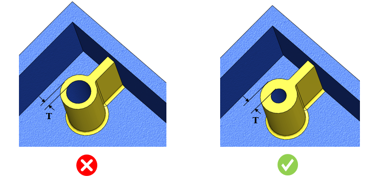

ボスの円筒面間の最小肉厚は、ユーザーが指定した値以上でなければなりません。
ボスの円筒面間における最小肉厚は、穴あけ加工やその他の製造工程中、また締結時に破損を防ぐために必要です。
一般的なガイドラインでは、ボスの最小肉厚は 5 mm 以上とすることが推奨されています。
ルール UI では、材料の一覧が 材料マッピング（Map Material） から読み込まれ、ユーザーは材料およびその値を設定できます。
材料とその値を設定した後、ユーザーは Ctrl+M コマンドを使用して、ルール UI 内で材料グループおよびグレードとともに設定済み材料の一覧をフィルタリングして表示できます。同じキー（Ctrl+M）を使用してフィルタをリセットできます。

ここでは、
T = ボスの肉厚
注記：
最大許容ドリル径を超える直径を持つ穴は、本ルールの対象外とします。
このルールは、アセンブリレベルの解析にも対応しています。
このルールは、DFMPro 設定 に基づき、トップレベルのアセンブリ部品に対して実行できます。